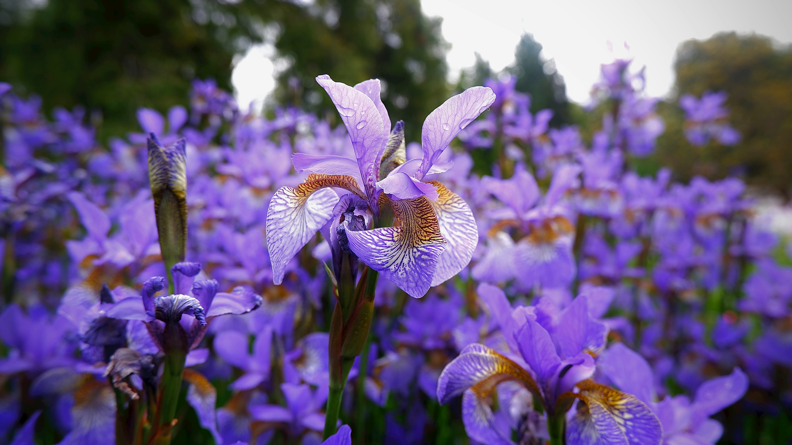
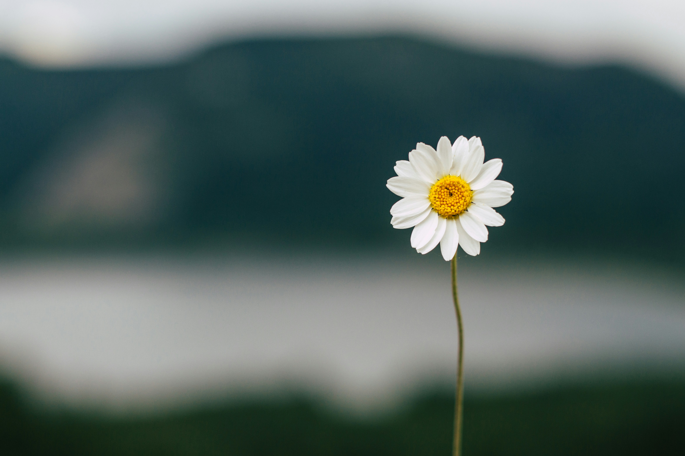
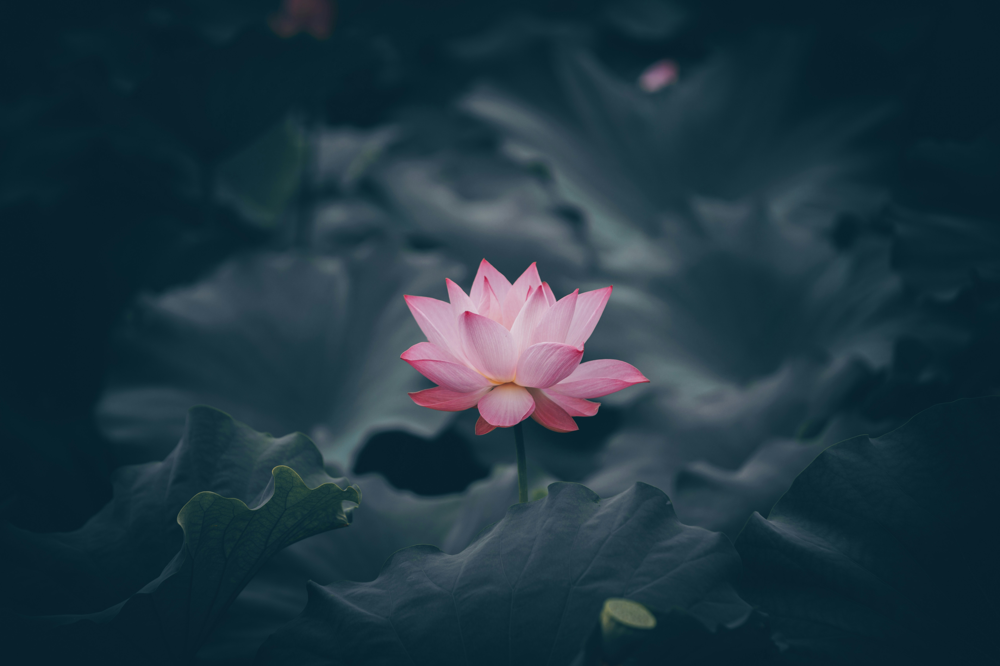
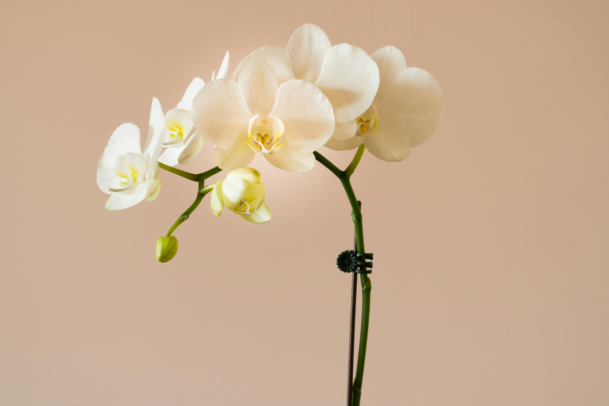
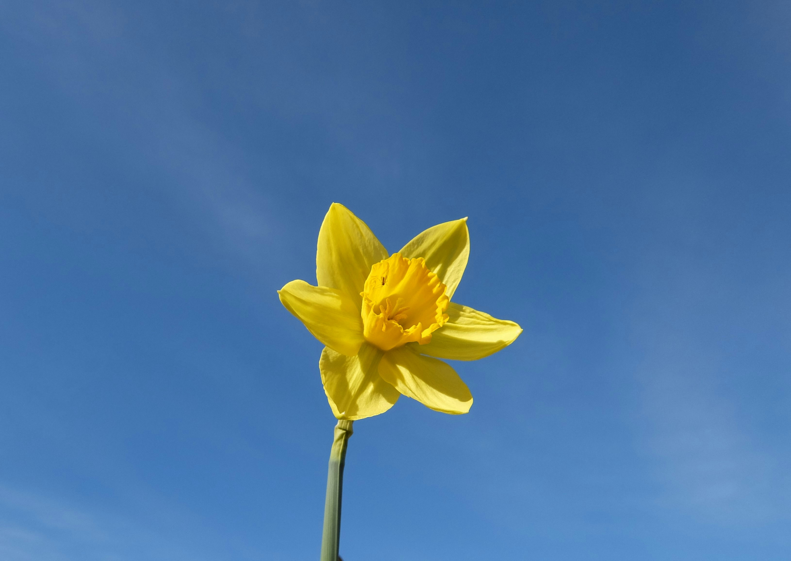
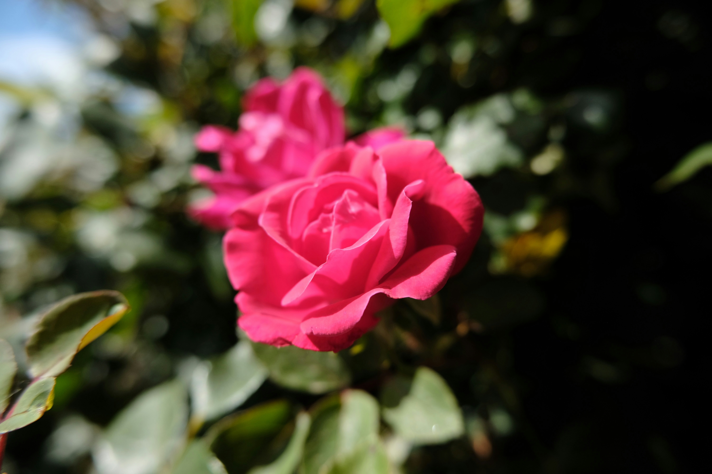
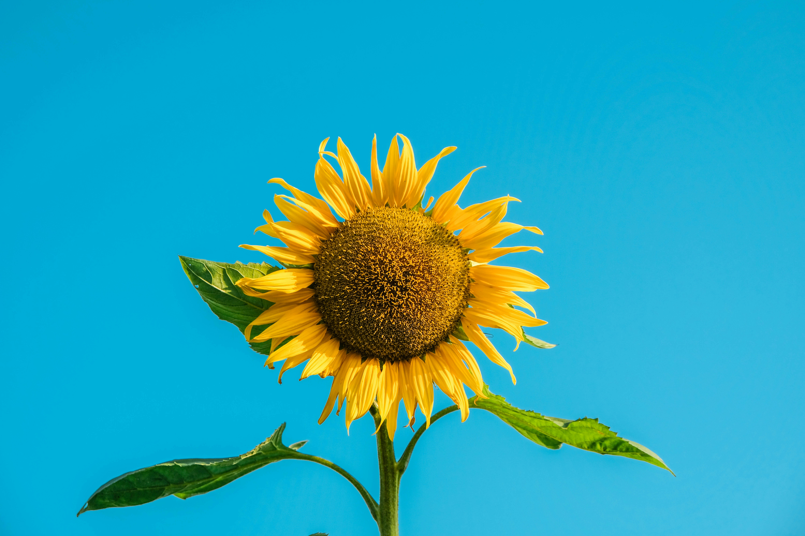

-

Flowers
iris
Irises are elegant flowers known for their intricate, sword-shaped petals and a range of vibrant colors. Symbolizing wisdom and courage, irises have mythological ties and are associated with the Greek goddess Iris. These perennial blooms add grace and sophistication to gardens.
-

Flowers
daisy
Daisies are delicate and charming flowers with a classic white bloom and a sunny yellow center. Symbolizing innocence and purity, daisies often evoke feelings of simplicity and joy. They are commonly found in meadows, and their timeless beauty has inspired poets and artists alike.
-

Flowers
lily
Lilies, known for their elegant and fragrant blossoms, stand as symbols of purity, renewal, and transience. With various species and colors, including white, pink, and vibrant orange, lilies are versatile and carry diverse cultural meanings. The Madonna Lily, in particular, holds religious significance, often associated with the Virgin Mary. Lilies are commonly used in bouquets and arrangements for weddings and funerals alike, signifying love and the cycle of life. Whether in gardens or floral displays, lilies captivate with their graceful presence and timeless allure.
-

Flowers
lotus
The lotus, with its exquisite petals emerging from muddy waters, symbolizes purity and spiritual enlightenment in various cultures, especially in Hinduism and Buddhism. Its unique growth pattern and serene beauty make it a metaphor for rising above challenges to achieve inner peace.
-

Flowers
orchid
Orchids, diverse in shapes and colors, represent beauty, strength, and love. With a reputation for being exotic and rare, orchids are often associated with luxury and refinement. Their unique adaptations for pollination contribute to their allure, making them a symbol of resilience and elegance.
-

Flowers
daffodil
Daffodils, heralds of spring, grace landscapes with their cheerful, trumpet-shaped flowers and vibrant yellow hues. Symbolizing renewal and the arrival of warmer days, daffodils often represent hope and optimism. Native to Europe and North Africa, these hardy flowers bloom early, bringing a burst of color to gardens and fields. Daffodils are also associated with the festival of Easter, signifying the triumph of life over winter's dormancy. Their enduring beauty and bright demeanor make them a delightful emblem of the changing seasons.
-

Flowers
rose
Roses, renowned as symbols of love, boast velvety petals and a captivating fragrance. Their diverse colors convey emotions, with red signifying deep affection and white representing purity. Inspirations for poets and artists, roses hold a timeless allure across cultures. Beyond their romantic connotations, rose oil is used in aromatherapy for its calming properties. Whether in a garden or a bouquet, roses remain a cherished emblem of love and beauty.
-

Flowers
tulip
Tulips, with their elegant cup-shaped blooms, signify grace and simplicity in the floral world. Originating from Central Asia, tulips have become a global symbol of spring and renewal. The diverse colors of tulips carry various meanings, from red symbolizing deep love to yellow representing cheerful thoughts. Known for their unique ability to keep growing after being cut, tulips exude resilience and vitality. Whether adorning gardens or floral arrangements, tulips bring a burst of color and a touch of elegance to any setting.
-

Flowers
sunflower
Sunflowers, with their vibrant yellow petals and large brown centers, symbolize adoration and loyalty. They follow the sun's movement throughout the day, a behavior known as heliotropism. Sunflowers are not only visually stunning but also hold cultural significance in various societies.